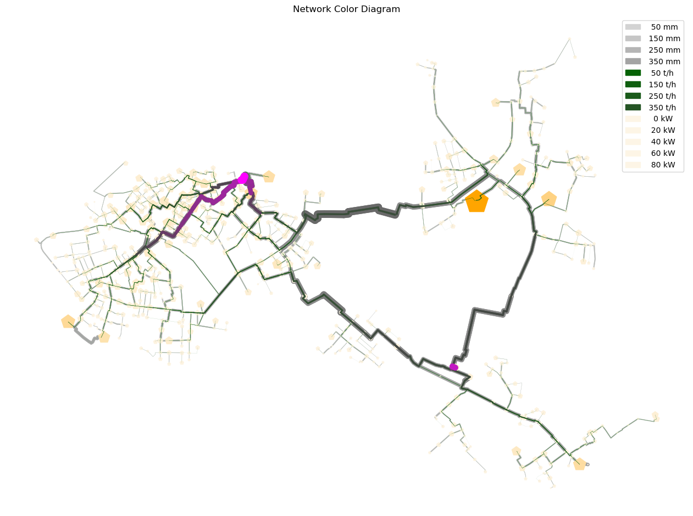

[1]:
import os
import geopandas
import logging
import pandas as pd
import io
import subprocess
import matplotlib.pyplot as plt
from PIL import Image
import numpy as np
import matplotlib.pyplot as plt
import matplotlib.colors
import matplotlib.patheffects as path_effects
import folium
from folium.plugins import HeatMap
try:
from PT3S import dxAndMxHelperFcts
except:
import dxAndMxHelperFcts
try:
from PT3S import Rm
except:
import Rm
try:
from PT3S import ncd
except:
import ncd
[2]:
import inspect
# Print the source code of the module
#print(inspect.getsource(ncd))
[3]:
import logging
logger = logging.getLogger()
logFileName = r"pNcd_DH.log"
loglevel = logging.DEBUG
logging.basicConfig(
filename=logFileName,
filemode='w',
level=loglevel,
format="%(asctime)s ; %(name)-60s ; %(levelname)-7s ; %(message)s ; [%(filename)s:%(lineno)d - %(funcName)s]"
)
fileHandler = logging.FileHandler(logFileName)
logger.addHandler(fileHandler)
consoleHandler = logging.StreamHandler()
consoleHandler.setFormatter(logging.Formatter("%(levelname)-7s ; %(message)s ; [%(filename)s:%(lineno)d - %(funcName)s]"))
consoleHandler.setLevel(logging.INFO)
logger.addHandler(consoleHandler)
[4]:
dbFilename="Example5"
dbFile=os.path.join(os.path.dirname(os.path.abspath(dxAndMxHelperFcts.__file__))
+'/Examples/'
+dbFilename
+'.db3'
)
[5]:
m=dxAndMxHelperFcts.readDxAndMx(dbFile=dbFile
,preventPklDump=True
)
#NBVAL_IGNORE_OUTPUT
INFO ; Dx.__init__: dbFile (abspath): c:\users\aUserName\3s\pt3s\Examples\Example5.db3 exists readable ... ; [Dx.py:322 - __init__]
INFO ; dxAndMxHelperFcts.readDxAndMx:
+..\Examples\Example5.db3 is newer than
+..\Examples\WDExample5\B1\V0\BZ1\M-1-0-1.1.MX1:
+SIR 3S' dbFile is newer than SIR 3S' mx1File
+in this case the results are maybe dated or (worse) incompatible to the model ; [dxAndMxHelperFcts.py:1640 - readDxAndMx]
INFO ; dxAndMxHelperFcts.readDxAndMx:
+..\Examples\WDExample5\B1\V0\BZ1\M-1-0-1.XML is newer than
+..\Examples\WDExample5\B1\V0\BZ1\M-1-0-1.1.MX1:
+SirCalc's xmlFile is newer than SIR 3S' mx1File
+in this case the results are maybe dated or (worse) incompatible to the model ; [dxAndMxHelperFcts.py:1652 - readDxAndMx]
INFO ; Mx.setResultsToMxsFile: Mxs: ..\Examples\WDExample5\B1\V0\BZ1\M-1-0-1.1.MXS reading ... ; [Mx.py:2156 - setResultsToMxsFile]
INFO ; dxWithMx.__init__: Example5: processing dx and mx ... ; [dxAndMxHelperFcts.py:115 - __init__]
ERROR ; dxWithMx._V3_AGSNVEC: Exception: Line: 1263: <class 'KeyError'>: 'QM' ; [dxAndMxHelperFcts.py:1282 - _V3_AGSNVEC]
[6]:
gdf_ROHR=m.gdf_ROHR
[7]:
gdf_FWVB=m.gdf_FWVB
[8]:
gdf_KNOT=m.gdf_KNOT
[17]:
fig, ax = plt.subplots(figsize=Rm.DINA3q)
pipes_patches_1 = ncd.pNcd_pipes(ax=ax
,gdf=gdf_ROHR
,attribute='DI'
,colors = ['lightgray', 'dimgray']
,legend_fmt = '{:4.0f} mm'
,legend_values = [50,150,250,350]
)
nodes_patches = ncd.pNcd_nodes(ax=ax
,gdf=gdf_FWVB
,attribute='W'#kW
,colors = ['oldlace', 'orange']
,marker_style='p'
,legend_fmt = '{:4.0f} kW'
,legend_values = [0,20,40,60,80])
pipes_patches_2 = ncd.pNcd_pipes(ax=ax
,gdf=gdf_ROHR
,attribute='QMAVAbs'
,colors = ['darkgreen', 'magenta']
,legend_fmt = '{:4.0f} t/h'
,legend_values = [50,150,250,350])
all_patches = pipes_patches_1 + pipes_patches_2 + nodes_patches
ax.legend(handles=all_patches, loc='best')
plt.title('Network Color Diagram')
plt.show()
